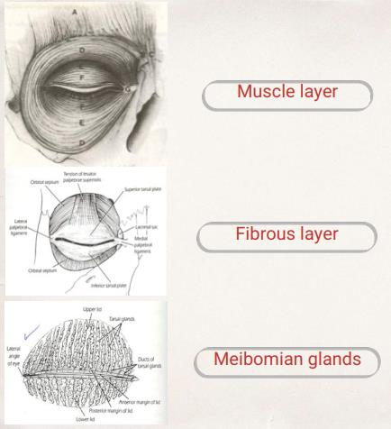

Part I · Minute anatomy
Layers of the eyelid from outside inwards
- The skin.
- The subcutaneous areolar tissue.
- The muscles layer.
- The submuscular areolar tissue.
- The fibrous layer (tarsus and orbital septum).
- The conjunctiva — palpebral portion.

Cut section of the upper eyelid: muscle layer, fibrous layer and meibomian glands